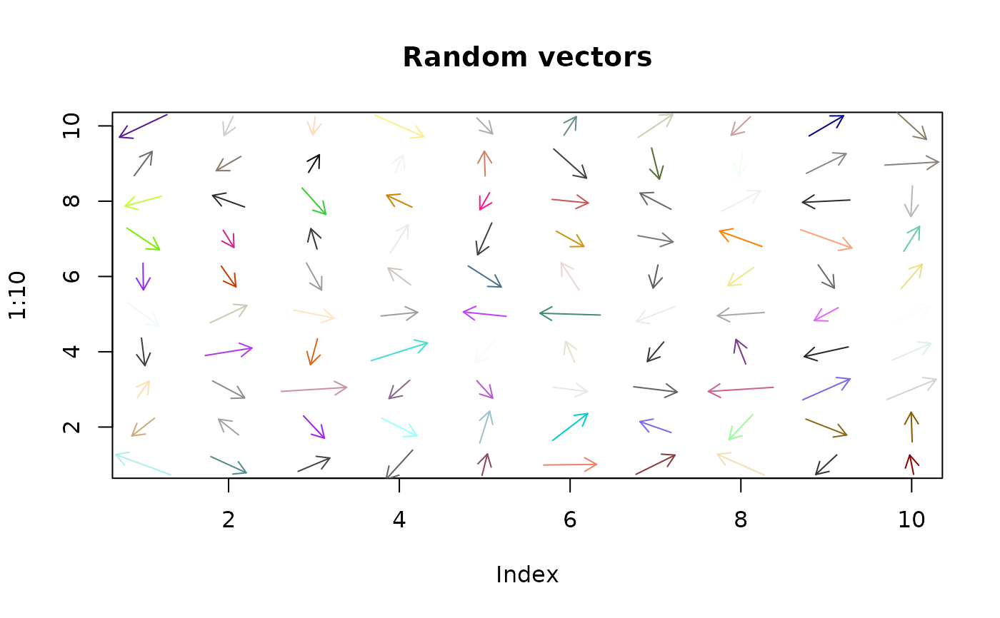

Display magnitude/direction vectors
vectorField.RdDisplay magnitude/direction vectors as arrows on an existing plot.
Arguments
- u,v
x (longitude) and y (latitude) offsets OR orientation and magnitude in either radians or degrees. See details.
- xpos,ypos
The centers of the vectors in user units.
- scale
The proportion of each cell that the maximal vector will fill. See details.
- headspan
The extent of the heads of the arrows as a proportion of cell size.
- vecspec
How the vectors are described. See details
- col
Color(s) for the arrows.
Details
vectorField displays arrows on an existing plot. Each arrow is specified by a position on the plot xpos,ypos and either x/y offsets or orientation and magnitude. The default is x/y offsets, and the user must specify whether radians or degrees are used if the orientation/magnitude option is used.
If the first four arguments are matrices, there must be no missing values. If these arguments are vectors, the calculation of the scaling of the magnitudes and length of the arrowheads may be slightly different.
Examples
if (FALSE) {
# this requires the maps package, and just wouldn't pass check
require(maps)
map("world",xlim=c(110,155),ylim=c(-40,-10))
par(xpd=TRUE)
text(132,-5,"Approximate magnetic deviation - Australia",cex=1.5)
par(xpd=FALSE)
long<-rep(seq(117.5,152.5,by=5),6)
lat<-rep(c(-12.5,-17.5,-22.5,-27.5,-32.5,-37.5),each=8)
# just show the direction, don't have a magnitude difference
mag<-rep(1,48)
devdeg<-c(110,98,85,65,65,65,65,65,
115,100,90,80,72,66,63,55,
130,100,90,82,72,67,62,54,
122,111,95,86,70,67,56,48,
118,116,110,87,74,68,62,45,
128,115,107,90,78,66,53,45)
vectorField(devdeg,mag,long,lat,scale=0.7,vecspec="deg")
}
# do a magnitude/direction plot with radians
plot(1:10,type="n",main="Random vectors")
mag<-runif(100)+1
dir<-runif(100)*2*pi
xpos<-rep(1:10,10)
ypos<-rep(1:10,each=10)
vectorcol<-sample(colors(),100)
vectorField(dir,mag,xpos,ypos,scale=0.8,vecspec="rad",col=vectorcol)
